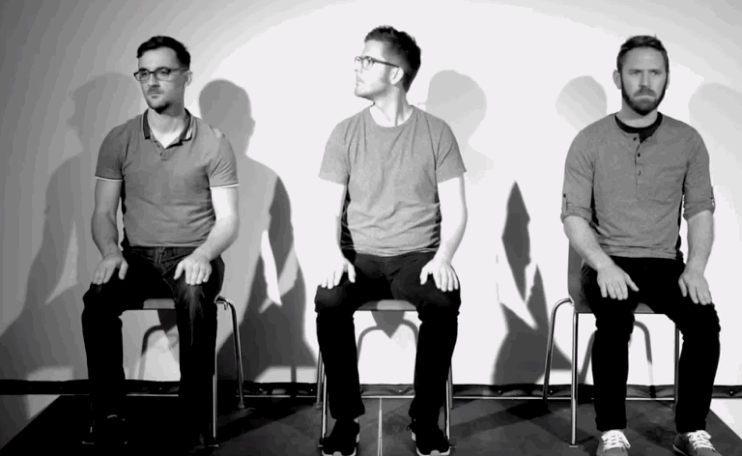
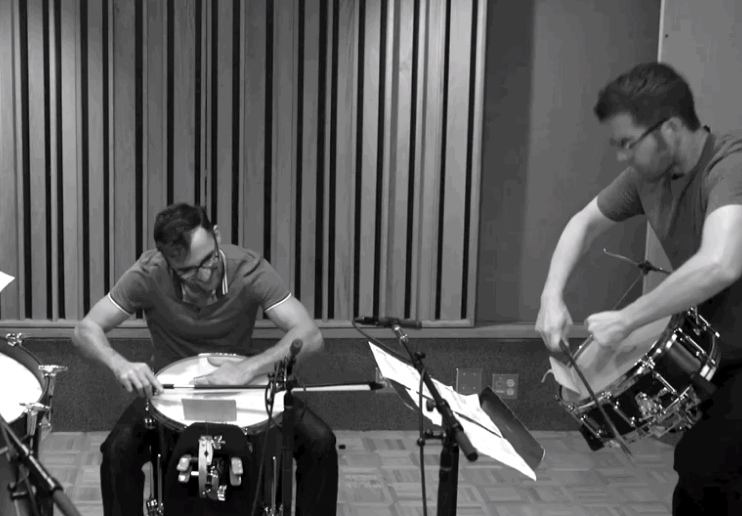

In 2009 at The University of Texas at Austin, Adam Bedell, Cullen Faulk, and Matthew Teodori formed LineUponLine as a percussion group set on pushing the boundaries of music. Today, they are still pursuing that goal - while lifting up aspiring composers along the way.
The Austin-based trio’s mission is to champion living composers and pursue the musically unfamiliar. They are a non-profit that facilitates events and programs helping composers to grow and premier their work, meet other creatives in the industry, and work together to change how music is defined.
